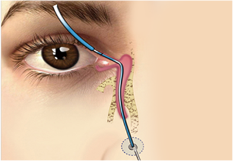

안성형
에스안과
시력교정
노안/백내장
망막/황반변성
안구건조증
녹내장
소아안과
안성형
예약/상담
눈물흘림
안검하수
눈꺼풀처짐
눈물흘림
안검내반
3
눈물흘림 (유루증)
안과전문의가 눈의 기능요소를
고려해
치료합니다.
눈물흘림
이란?
기능적 불편함을 초래하는 질환
정확한 원인파악과 치료가 중요합니다.
눈물이 과도하게 흐르는 질환으로 배출
기능이 저하되어 발생하게 됩니다.
눈물흘림증은 눈물이
눈물길을 통해 코로 배출 되어야 하는 눈물길이
막히거나 좁아지면서
눈물이 밖으로 눈물이 과도하게 배출 되는 증상을
말합니다. 눈물이 과도하게 배출되면서 눈물 주머니염이 생겨 고름이
역류하거나 피부염이 발생할 수 있습니다.
눈물흘림증
왜 발생할까?
눈물흘림증은 나이에 의한
노화
또는
눈꺼풀처짐
으로 발생하고 있으며
외부자극
에 의해 반사성으로 나타나기도하며
안구건조증
으로 인하여 발생하기도 합니다. 또는
선척적
또는
후천적
으로
눈물관이 폐쇄
되어 눈물이 제대로 배출하지 못해 생깁니다.
노화
눈꺼풀처짐
외부자극
안구건조증
눈물관 폐쇄
선천적요인
눈물흘림증의 주요 증상
증상을 확인 후 다음과 같은
증상이 나타난다면
병원에 내원하여
정확한 검진을 받는 것을 권장
합니다.
눈물이 고여서 시야가 흐릿하다.
눈물을 자주 닦아 눈 주위가 짓무른다.
평상시에도 눈물이 맺혀 있다.
바람이 부는날 눈물 증상이 더욱 심하다.
눈곱이 끼고 고름이 자꾸 발생한다.
실내에서 전자기기를 사용하면 눈물이 흐른다.
눈물흘림증 배출 비교
정상적인 눈물의 흐름
눈물관이 막힌 눈물의 흐림
눈물흘림증의 종류
눈물 흘림증은
눈물길 폐쇄
에 의해 많이 발생하고 있으며
선천성
또는
후천적인 원인
에 의해 나타나고 있습니다.
1) 선천성 눈물길 폐쇄
태어 날 때부터
눈물길의 문제로 눈물이
정상적으로 배출하지 못하여 발생
하며
전체 신생아의 8~10%에 해당되는비교
적 흔한 질환입니다.
출생 후 6개월까지는 눈물주머니 마사지법을 통해 치료를 하지만
6개월 이후에도 호전되지 않으면 시술
2) 후천성 눈물길 폐쇄
후천성 눈물길 폐쇄는
눈물 구멍의 협착,
눈물길 부분
또는
완전 폐쇄
의 3종류에
의해 발생하는 질환입니다.
후천적으로 눈물길이 폐쇄된경우는
일상생활에
불편함을 느껴 지장을 줄 때
시술
눈물흘림증 수술적 치료방법
눈물길 폐쇄로 인한 눈물흘림증이 발생한다면 눈꺼풀 주위에 염증이 잘 생기며 일상생활에 불편함
을 줄 수
있기 때문에 안과에서 정확환 검사를 통해 자신에게 맞는 수술을 하는 것이좋습니다.
1. 비루관 부지법
눈물점, 눈물소관, 코눈물관 등 정밀한 검사 후 막힌 부분을 특수침으로 치료
특수 기구를 사용하여 눈물길의 막힌 부분을 직접 뚫어주는 수술 로 점안 마취 후 10분
정도의 시간이 소요되는 간단한 시술입니다.

2. 실리콘 삽입술
눈꺼풀의 눈물점이 좁아져 눈물이 정상적으로 흘러가지 못하는 증상
눈물길이 많이 좁아져 있는 경우, 코를 통해 실리콘 튜브를 눈물길에 삽입하는 방법으로
5~6개월 후에 실리콘 튜브를 제거하는 수술입니다.
안과에서 하는 미용적 눈수술
괜찮을까요?
안과성형은 단순히 미용상 목적이 아니기 때문에
안구의 기능과 상태를 정확히 파악
하고 치료 할 수 있는
안과전문의에게 치료를 받아야 기능적 문제와 외관상 문제를 안전하고 확실하게 치료
할 수 있습니다.
눈 구조를 정확하게
파악하여
개인 맞춤
수술
로
체계적인수술
미용안성형 안과전문의
풍부한 임상 경험
을
바탕으로한
최적의수술
안구의 기능을 고려한
정확한 수술로
부작용을
최소화
한
안전한 수술